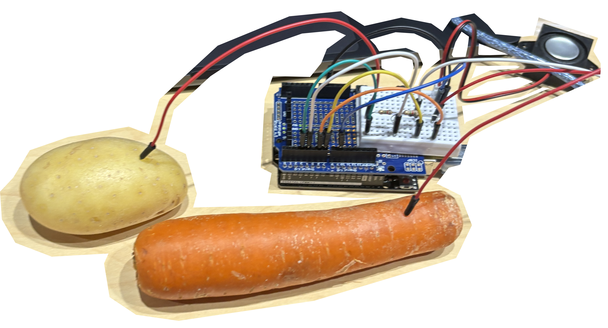
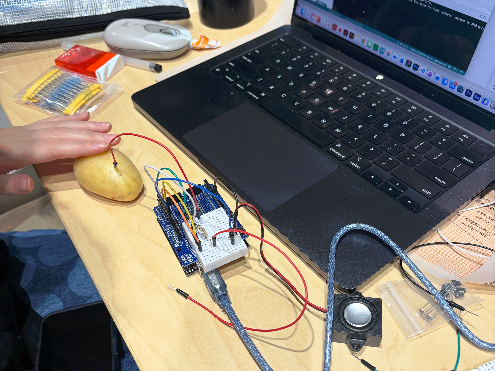

back
In our last class in the telstra creator space, we did another, quite iconic arduino activity where we created touch-sensitive object setup. Seeing this type of circut advertised as a product, I didn't realise how simple the circut would be to create our own organic keyboards.
Again, during this activity, we had issues with the volume of the speaker element for the activity. No matter what adjustments we made - It was very quiet to the point we had to strain to hear the note change between the vegetable inputs. Possibly this issue could have stemmed from the speaker itself, but we were content enough with our result as is.
Thinking about this exercise some more, I think it has potential in its idea to explore more organic elements in physical computing interactions. As the system requires moisture for the current to be conducted, what other mediums could be used to create interesting effects?
I could imagine a project where a system like this is set up to a high-mositure item, like a Cake, which then is destroyed. Would this system be able to intepret the destruction of the object through audio? And would that feel quite brutal like the screaming machine...
